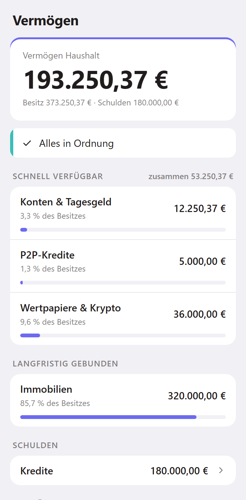
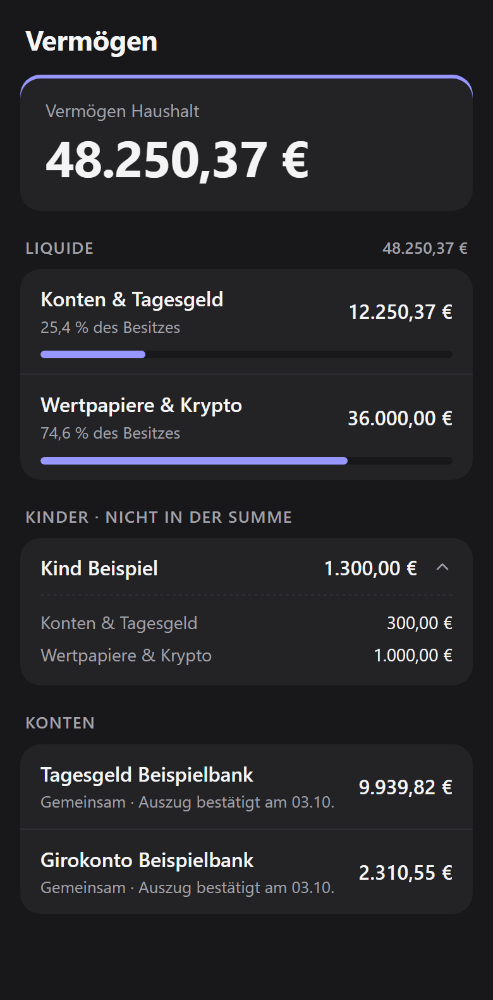

Übersicht (Mini-App)
Links neben dem Eingabefeld im Chat mit dem Bot sitzt der Knopf „📊 Übersicht“. Ein Tipp darauf öffnet direkt in Telegram eine kleine App (Telegram-Mini-App), die deine Finanzen auf einen Blick zeigt: ohne Frage an den Bot, ohne Warten auf eine Antwort.


Beispielbilder mit erfundenen Werten. Hell oder dunkel folgt deiner Telegram-Einstellung.
Was du siehst
Unten wechselst du über Reiter zwischen den Bildschirmen. Ein Bildschirm, zu dem es für dich nichts gibt, erscheint gar nicht erst.
Steht irgendwo „unvollständig – ein Kurs oder Wechselkurs fehlt“, fehlt für einen Betrag der aktuelle Kurs. Die Summe ist dann zu niedrig, bis der Kurs da ist.
Vermögen
- Vermögen gesamt: alles zusammen, Kredite schon abgezogen.
- Nach Anlageart: wie viel auf Konten, in Wertpapieren, Immobilien, Altersvorsorge und so weiter liegt. Der Balken zeigt den Anteil am Ganzen, Kredite stehen als Minus-Betrag darunter.
- Konten: jedes Konto mit seinem Kontostand in der eigenen Währung und dem Datum, an dem du den letzten Kontoauszug bestätigt hast (siehe Monats-Check).
Ziele
- Zurückgelegt für Ziele: was in allen Sparzielen zusammen steckt.
- Sparziele: jedes Ziel mit dem bisher Gesparten, Zielbetrag und Datum und einem Balken. Daneben steht, wie es läuft:
- im Plan: du liegst gut in der Zeit.
- hinter Plan: bis zum Zieldatum fehlt mehr, als die Zeit hergibt. Wie viel du monatlich nachlegen müsstest, sagt dir der Chat.
- erreicht: der Zielbetrag ist da.
- pausiert: die Sparrate oder der Sparplan des Ziels ist angehalten.
- nicht messbar: die Sparrate geht ohne eigenes Sparkonto ab, dann lässt sich der Stand nicht verfolgen. Abhilfe: dem Ziel im Chat ein Sparkonto zuordnen.
- Rücklagen: etwa die Instandhaltungsrücklage für eine Immobilie, mit Stand, monatlicher Rate und der Empfehlung dazu („unter Empfehlung“ oder „ausreichend“).
- Sparpläne: Betrag je Ausführung, was das im Monat ausmacht, und die nächste Ausführung. Ein angehaltener Plan steht als „pausiert“ darunter.
Ein Beispiel: Ziel „Urlaub“ über 3.000 € bis Juni, gespart sind 1.200 €. Ist bis heute schon deutlich mehr Zeit vergangen, als Geld zusammengekommen ist, steht dort „hinter Plan“.
Zahlungen
- Kommende Zahlungen: alle Daueraufträge der nächsten 30 Tage mit Datum, Konto und Betrag, Abbuchungen mit Minus, Eingänge wie das Gehalt mit Plus. Bei einer Umbuchung zwischen zwei Konten steht das Zielkonto dabei. Oben steht die Summe dessen, was in dieser Zeit abgeht (ohne Umbuchungen zwischen eigenen Konten).
- Kontovorschau bis zum nächsten Geldeingang: für jedes Konto, zu dem du schon einen Kontoauszug eingespielt hast (siehe Monats-Check), der geschätzte Stand heute und der tiefste Stand bis zum nächsten Gehalt, mit Datum. Ein Beispiel: Steht beim Girokonto „Tiefster Stand 140 € am 27.11.“ und darunter rot „unter Puffer“, fällt das Konto vor dem nächsten Gehalt unter deinen Sicherheitspuffer (Standard 250 €). Gelb „knapp“ heißt, der Stand bleibt zwar über dem Puffer, aber unter dem Doppelten davon. Grün „reicht“ heißt alles gut.
- Fehlt für ein Konto in Fremdwährung der Wechselkurs, steht dort grau „Kurs fehlt“ statt einer Ampel.
Kredite
- Jeder laufende oder pausierte Kredit mit der Restschuld, der Monatsrate und dem Zinssatz. Kennst du den ursprünglichen Kreditbetrag, zeigt ein Balken, wie viel schon getilgt ist. Oben steht die Restschuld aller Kredite zusammen.
- Gelb „Zinsbindung bis …“ erscheint, wenn die Zinsbindung in weniger als zwölf Monaten endet. Dann ist Zeit, sich um die Anschlussfinanzierung zu kümmern. Ist das Datum schon vorbei, steht dort „Zinsbindung endete am …“.
- Ein pausierter Kredit trägt den grauen Hinweis „pausiert“.
Depot
- Depotwert: der aktuelle Wert aller Wertpapiere und Kryptowerte.
- Je Depot jede Position mit Wert, Stückzahl und dem Datum des letzten Kurses. „Kurs veraltet“ heißt: der letzte Kurs ist schon länger nicht mehr aktualisiert worden. „Kurs fehlt“ heißt: es gibt noch gar keinen, der Wert fehlt dann in der Summe.
- Für Ziele reserviert: wie viel Geld im Depot für Sparziele zurückgelegt ist und ob der Depotwert das deckt: „gedeckt“, „nicht gedeckt“ oder „nicht ermittelbar“, solange ein Kurs fehlt.
Hinweise auf der Startseite
Was Aufmerksamkeit braucht, steht als Hinweis oben auf der Startseite, Rotes vor Gelbem. Ein Tipp darauf öffnet den passenden Bildschirm. Ein Beispiel: „Girokonto: Der tiefste Stand (140 € am 27.11.) liegt unter dem Puffer. Vorschlag: 150 € vom Tagesgeld bis 25.11. umbuchen.“ Oder: „Baufinanzierung: Die Zinsbindung endet am 30.06., Restschuld dann etwa 182.400 €.“ Weitere Beispiele: „Urlaub liegt hinter Plan“ oder „Kurs fehlt oder ist veraltet in Depot X“.
Die Übersicht spricht die Sprache, die du mit /language eingestellt hast.
Nur anschauen, gebucht wird im Chat
Die Übersicht zeigt nur an. Buchen, Ändern und Löschen läuft wie gewohnt im Chat, mit der Bestätigungs-Karte davor (siehe Chatten & Bestätigen). Alle Zahlen rechnet die Datenbank aus denselben Daten, die auch der Chat nutzt; die App selbst rechnet nichts.
Befehle gehen jetzt über „/“
Der Knopf „📊 Übersicht“ sitzt an der Stelle, an der vorher der Menü-Knopf mit der Befehlsliste war. Die Befehle gibt es weiterhin: Tippe im Eingabefeld „/“, dann klappt die Liste auf (/help, /reminders usw., siehe Befehle).
Wer was sieht
- Du als Owner und dein Partner bzw. deine Partnerin seht den ganzen Haushalt, auch die Konten und Depots der Kinder.
- Kinder sehen nur, was ihnen gehört: eigene Konten, das eigene Depot, Sparziele für sie selbst und Sparpläne für sie auf ihrem eigenen Depot. Gemeinsame Haushaltskonten und -ziele und die Konten der Eltern tauchen bei ihnen nicht auf, auch nicht als Name. Beim eigenen Depot sieht ein Kind, wie viel darin für Ziele reserviert ist, aber nicht, für welche.
- Bei den Zahlungen sehen Kinder nur Daueraufträge von ihren eigenen Konten und Kredite, die auf ihren Namen laufen. Taschengeld vom Elternkonto erscheint als „Vom Haushalt“, ohne den Namen des Dauerauftrags oder des Elternkontos, und einen Umbuchungs-Vorschlag bekommen Kinder nie.
- Fremde Telegram-Nutzer bekommen den Knopf nie zu sehen.
Alle gekoppelten Haushaltsmitglieder bekommen den Knopf. Wer neu gekoppelt wird, entkoppelt wird oder die Sprache wechselt, sieht den Knopf bzw. die neue Beschriftung nach etwa einer Minute, ohne Update. Soll ihn nur der Owner haben, stellt der Admin das um (siehe unten).
Nach einer Stunde neu öffnen
Aus Sicherheitsgründen gilt ein Aufruf eine Stunde lang. Bleibt die Übersicht länger offen, erscheint der Hinweis, dass sie abgelaufen ist. Dann schließen und über den Knopf neu öffnen.
Ohne Internetverbindung zeigt die Übersicht nur ⚠ und den Knopf ↻ zum erneuten Laden.
Erscheint statt der Übersicht manchmal eine FritzBox-Seite (Anmeldung oder „URL nicht verfügbar“), zeigt deine Domain über IPv6 auf die FritzBox selbst. Der Chat funktioniert trotzdem. Abhilfe steht Schritt für Schritt unter FritzBox einrichten, und lifeagents doctor zeigt, ob es behoben ist.
Datenschutz
- Die Zahlen kommen direkt von deinem Server auf dein Handy. Telegram öffnet nur das Fenster; die Inhalte laufen nicht über die Telegram-Server. Aus dem Internet lädt die Seite nur ein kleines Hilfsprogramm von Telegram (für Farben, Zurück-Knopf und Anmeldung), keine deiner Daten.
- Jeder Abruf wird geprüft. Telegram gibt der App einen unterschriebenen Ausweis mit, wer sie geöffnet hat. Dein Server prüft diese Unterschrift bei jedem Abruf, und die Datenbank entscheidet anhand deiner Rolle im Haushalt, was du sehen darfst. Ein gefälschter oder abgelaufener Ausweis bekommt keine Daten.
- Nichts bleibt liegen. Die App speichert auf dem Handy nichts, und dein Server legt von diesen Abrufen keine Protokolle mit Inhalten an.
- Der Weg ins Internet ist derselbe wie für den Chat: Dein Türsteher (Reverse Proxy) braucht dafür keine neue Regel. Mehr dazu unter Datenschutz & Sicherheit.
Für Admins: an- und abschalten
Die Übersicht stellst du auf dem Server mit zwei Einstellungen ein. Die Knöpfe folgen nach etwa einer Minute von selbst, ein Update ist nicht nötig:
| Befehl | Wirkung |
|---|---|
lifeagents config set app audience household |
Alle gekoppelten Haushaltsmitglieder bekommen den Knopf, Kinder sehen nur Eigenes (so ist es eingestellt). |
lifeagents config set app audience owner |
Nur der Owner bekommt den Knopf. |
lifeagents config set app enabled false |
Schaltet die Übersicht ganz ab. Die Übersicht ist sofort gesperrt, der Knopf verschwindet nach etwa einer Minute; an seiner Stelle ist dann wieder der Menü-Knopf mit den Befehlen. |
lifeagents config set app enabled true |
Schaltet sie wieder ein. |
Kopplung, Entkoppeln und Sprachwechsel zieht der Server genauso nach. Klappt das wiederholt nicht (etwa weil Telegram nicht erreichbar ist), versucht er es alle zehn Minuten erneut, und lifeagents doctor meldet es nach einer halben Stunde.
Wie weit die Liste der kommenden Zahlungen reicht, ab wann ein Konto als knapp gilt und wie früh vor dem Ende einer Zinsbindung gewarnt wird, stellst du ebenfalls ein:
| Befehl | Wirkung |
|---|---|
lifeagents config set finance app_payments_days 30 |
Kommende Zahlungen für so viele Tage im Voraus. |
lifeagents config set finance coverage_warn_factor 2 |
Gelb, wenn der tiefste vorausgesagte Kontostand unter dem Doppelten des Puffers liegt; rot unter dem Puffer selbst (coverage_buffer_eur). |
lifeagents config set finance fixed_rate_warn_months 12 |
Hinweis, wenn die Zinsbindung eines Kredits in weniger als so vielen Monaten endet. |